Configuracio xarxa basica
[5. Configuració xarxa bàsica]
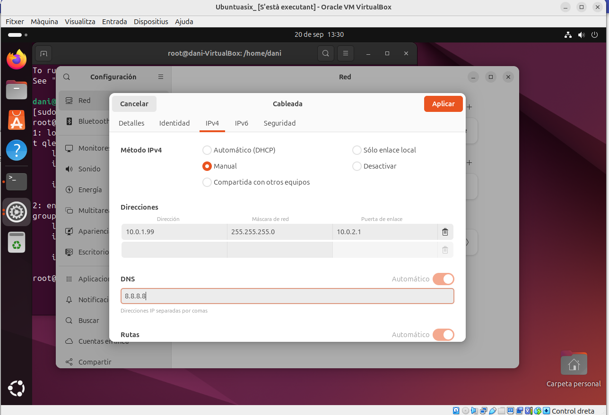
 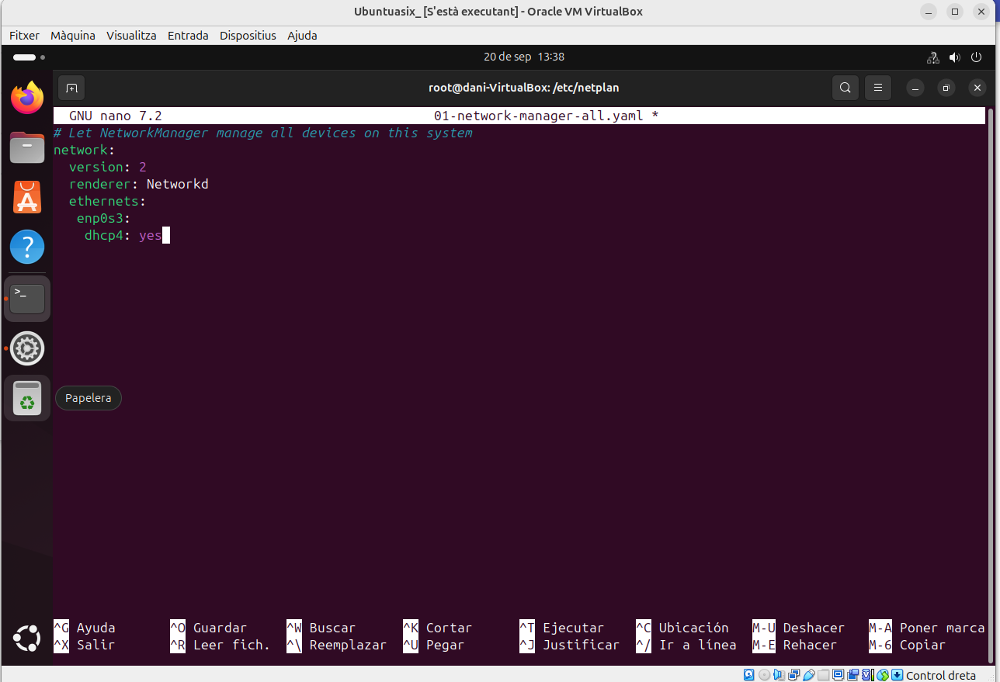
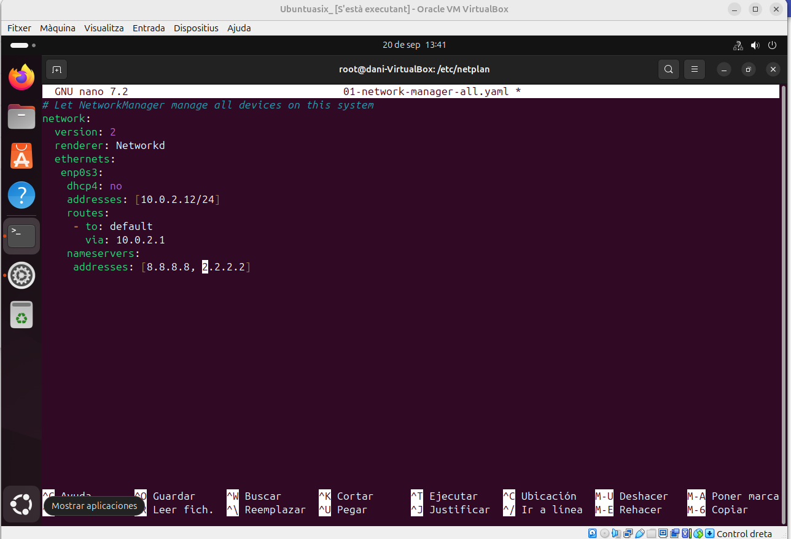
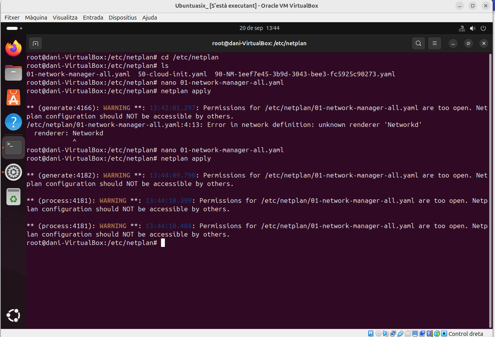
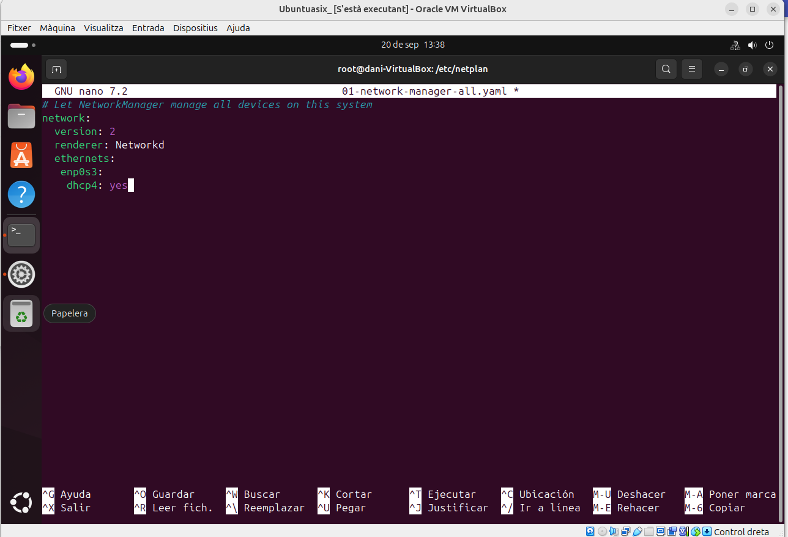
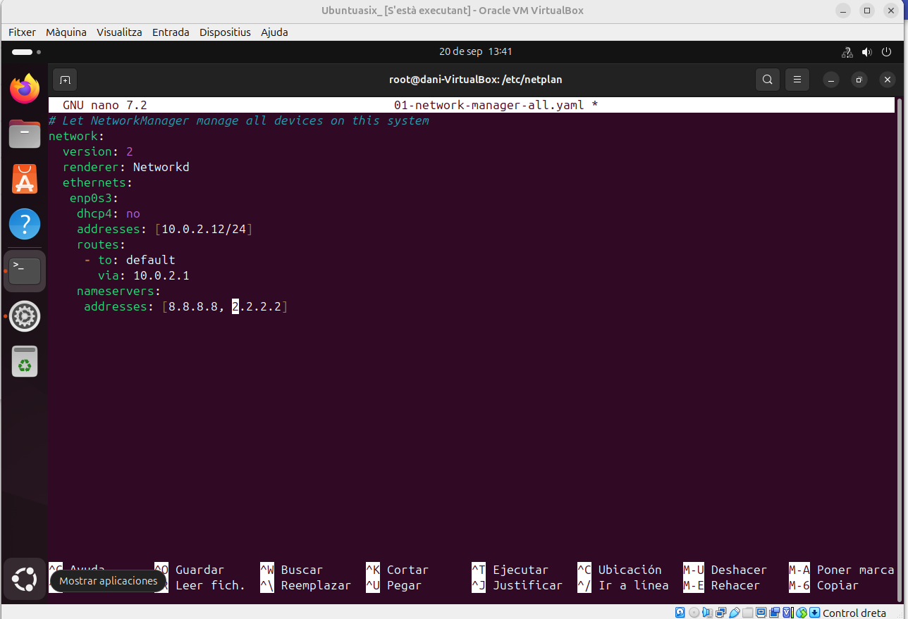
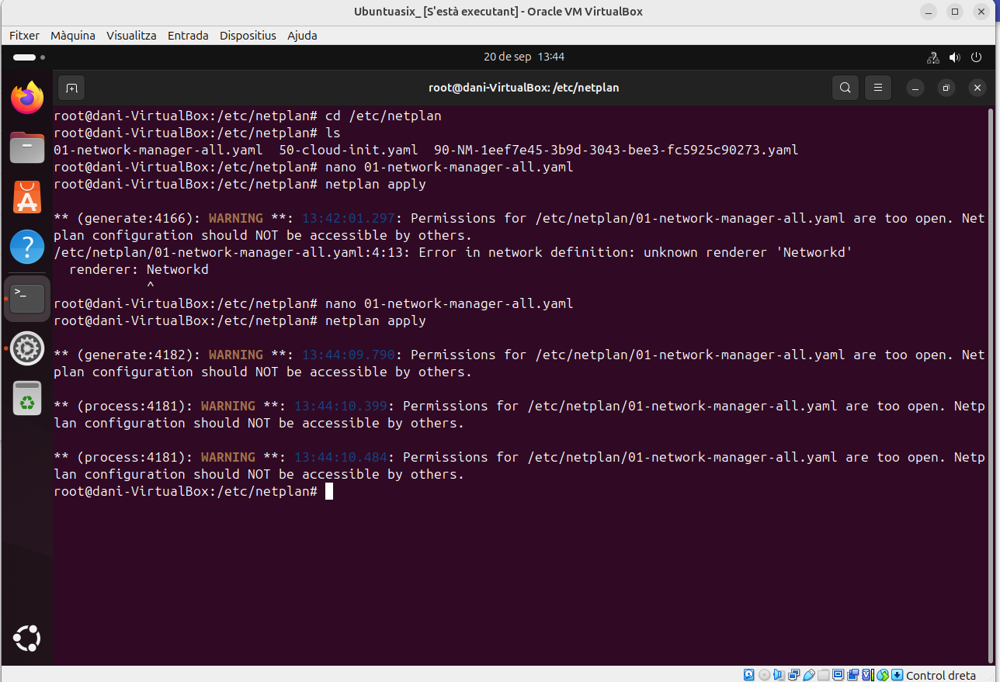
Contingut

Fiquem la IP en manual i fiquem el que veiem a la imatge.

Comprovem que la IP esta modificada.

Entrem dins de 01-network-manager-all.yaml i si esta igual que a la imatge ho deixem i si falta alguna cosa la afegim com mostrarem a la imatge

Finalment a de quedar aixi i quan hem acabat guardem i sortim

Mirem si se a modificat el archiu i ja haurem acabat
Per a fer intalacions de programaria a linux el metode a emprar és ulització de comandis com els següents
Instal·lar paquets: suo apt-*get install nom_de el_paquet
Eliminar paquets: suo apt-*get remove nom_de el_paquet
Buscar paquets: apt-cache search paraula_clau
Obtenir llistes actualitzades dels paquets disponibles: suo apt-*get update
Modernitzar el seu sistema amb les actualitzacions disponibles: suo apt-get dist-upgrade
Veure més comandos i opcions: apt-*get help
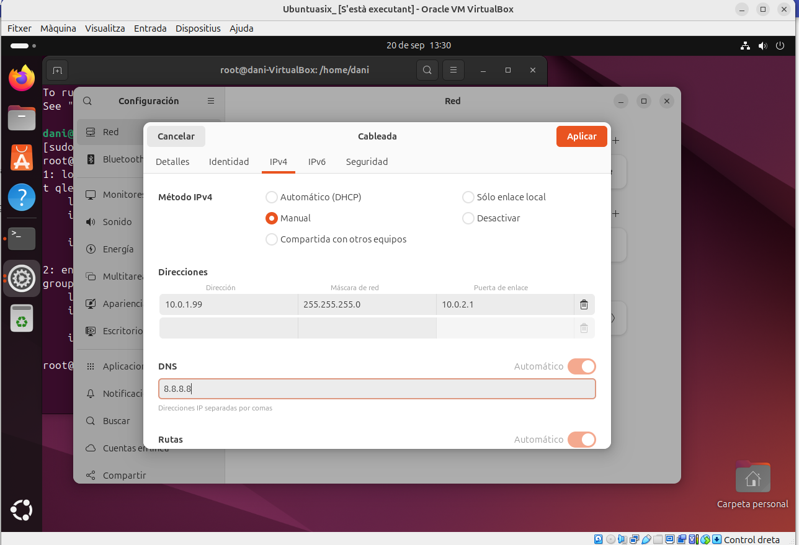
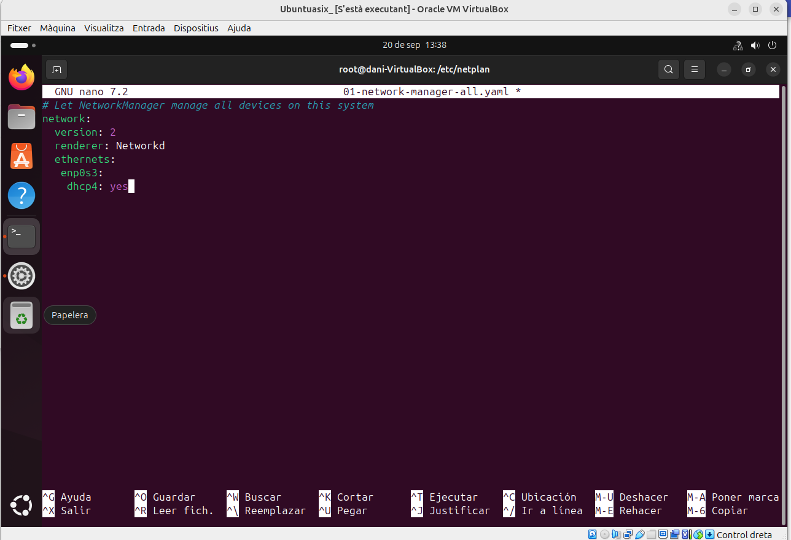
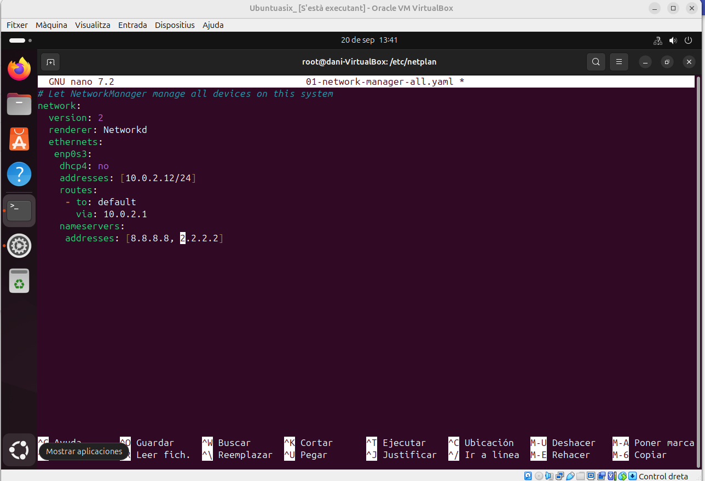
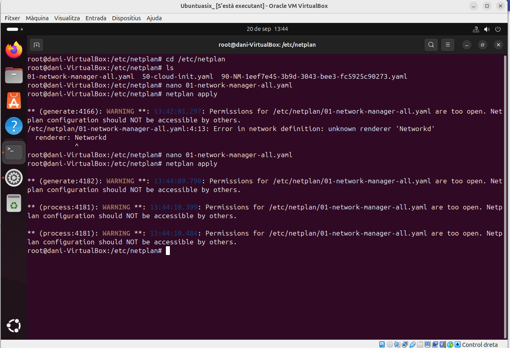